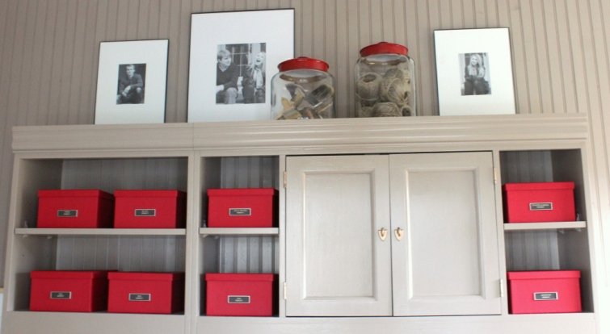
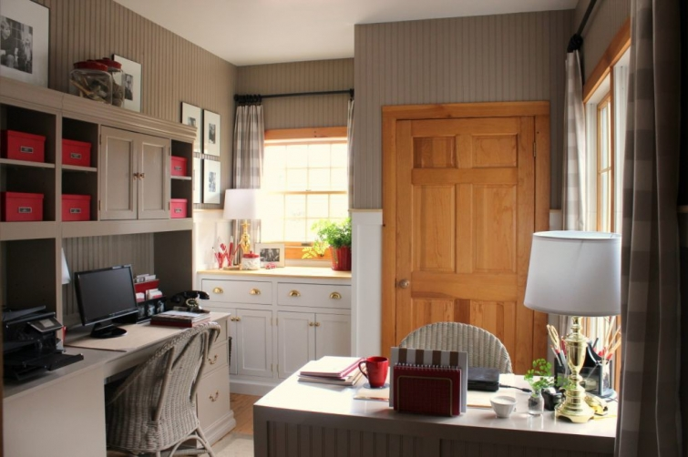
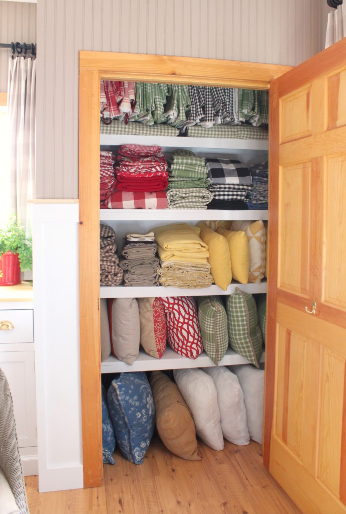

.png)
.PNG)
.PNG)
.PNG)
.PNG)
.PNG)
.JPG)
.JPG)
.PNG)
.PNG)


Happy Thanksgiving week! I know you are probably running around making shopping and grocery lists for your Thanksgiving dinner, but I want to answer a question today that I seem to be asked a lot lately.
Where in the world do you store all your stuff, Kelly??
Perhaps by answering this question, it will give you some ideas for storing holiday items as you look ahead to December. I do have a lot of “stuff” which is why I try to keep it as organized as I can. Like you, I want it not only to be neat, but also logical – so that I can find it easily. I have done a number of posts on some of it, and I am going to include a bit of that here for new readers, but I also have a few other closets, and the attic – (yes the attic!) to show you. Just know, this is not a pretty post…this is the utilitarian stuff. 🙂
Alright, let’s jump in…

Pictured above is my workroom…a real workhorse of a room around here. The photo at the top of the post shows the boxes that house all my ribbon. There is a tall basket that holds all my rolls of gift wrap at the end of the long desk area. The closet there behind my smaller desk houses all the drapes, pillow covers, and pillows that are not currently in use.

The cabinet under the window stores all my craft supplies. You can read the full post and see many more photos from the storage in that room in this post.
I have also written about the dining room storage.

The cabinet above holds a large portion of our plates and glassware.
Many more pieces are found inside this cabinet between the dining room and the kitchen…
and its drawers store all of our napkins.
There is also an antique cupboard in the dining room that is good storage.
It is where we keep our paper party goods…
along with some of our most used cookbooks.
You can read more about the dining room storage in the post here.
I’ve also shared a post with you about our master bedroom closet organization. (You can read all the details about it here.)
Would you like to see what is behind the door with the mirror? 🙂
(It’s not very pretty…)
This is what we call our cleaning closet because to the left side, over the water heater is where we put all of our cleaning supplies.
On the right side are more shelves.
This is where our vacuum cleaner, the mop buckets, and all of our leftover paint cans live.
While we are back in the bedroom wing, let’s take a look at the storage in the master bath.
All of our bathrooms have pedestal sinks. So there are no cabinets under our sinks like many homes have. Our house also does not have a linen closet (something I will be sure to include the next time we build!) This means our furniture pieces in the bathroom are utilized to handle the storage of not only bathroom related items, but also linens. I am not going to bore you with photographs of every drawer in there. I think you can get the gist of the storage from the labels on the photos.
This antique cupboard is also in our bathroom, and you can see that its contents are a mix of bath supplies and linens.
But we do have one closet in the master bath for our towels and medicines (and dirty clothes.)
Another “room” in our home that works hard for storage is our back porch. You can read all about its organization here, but I will show you one photo of the interior of the large cabinet out there. (This is an old photo though. The pottery is now up in my husband’s office, and the bottom shelf now houses gardening items.)
And finally, the BIG storage area…the attic.
(Yes, that’s a lot of red storage bins. 🙂 )
Because I like to decorate the entire house for Christmas, I have a large collection of Christmas items. They are in bins, labeled with a chalk pen. I have numbered them in the order that I decorate the rooms, and each bin is labeled with either the room or the contents. The bins are not all full; they are just separated to help with the organization of it. All of the white hanging bags are trash bags that hold our artificial garlands, and they have a piece of paper inside them that tells where they are to be hung. A couple of the bags also hold large wrapped boxes that I use for display (and they are labeled as well.) Oh, and that huge box there on the bottom is an old artificial tree that I am getting rid of in a week or so.
The other bins (those on the right in the photo) hold all the decorating items for the other months of the year. You will notice that some months have 2 bins because those months just lend themselves to more decorating than others (like October and November.)
There are a couple more spaces that I have already written blog posts on. One is the playroom organization, and you can see that post here.
And the other is the coat closet by the front door.
(post found here)
And I think that is about all the organization I can share with you (and probably more than you can bear to see! LOL) I also wanted to announce the winner of the Thanksgiving giveaway. You all left wonderful comments on all 3 of the Thanksgiving posts! There were over 400 comments, so I had to do the drawing a little differently this time. First, I got a random number to choose the winning post…
That gave me part 3 as the winning entry’s post.
Then I got a random number from the comments with that post…
And comment #9 belonged to this winning entry:
So congratulations to Dee!! I hope she will enjoy all the items for Thanksgiving in the giveaway. 🙂 I wish I could have given all of you the prizes, but I am afraid my budget will not allow me to do so. 🙁
Let me close by wishing all of you a very happy Thanksgiving Day! I will be taking a break from blogging for the rest of the week as we celebrate with family. (But our Disney daughter has to work on Thanksgiving Day. boo hoo!) I am so very thankful for your presence here and count it as one of my many blessings.
Until next time…


.PNG)
Kelly, I always look forward to your decorating posts and I have been thinking about your attic organization strategy since you originally shared this. How did you decide to pack your bins by room and not type of item? I tend to think in terms of rooms also, but I know others organize their decor by thing like berries, picks, stars, red items, etc. Do you consistently decorate your rooms similarly for Christmas and not use items you use from other times of the year, like a star dish at Christmas and the fourth of July? Thanks for your help. I am trying to develop a formal system once and for all.
Hi, Kelly. An argument has ensued at my house over the size of your red containers. My husband thinks they are like big shoe box size. I say they are big ones. What say you? Thanks. It would be a shame to be feuding over this on our 38th anniversary-haha-coming up this month…
Oh my stars, Kelly. What a great post. You are my idol. Thanks for taking the time and effort to inspire us.
Dear Kelly, the neatness and organization you have achieved is inspiring to me!! I have a LONG way to go! I think that some containers like the white ones you use for medicines would be particularly useful to us. Could you source them for us? I searched for white containers with lids online, but…..Thanks!!
——————————————————————–
The white boxes came from Target. They were in the storage area last summer, and I do not know if they still carry them. Hope this helps!
Kelly
Thank you for sharing your organised spaces. WOW! Gave me something to think about, my own storage organization.
Your organization post is so informative and helpful. I love every single entry on your blog (I have looked at every one of them.). Please never quit blogging. You are such an inspiration and bright spot. I hope you and your family have a blessed Thanksgiving.
Kelly,
You’re so lucky to have such great space for organizing and storing your items. I use Rubbermaid bins for all of my seasonal items but the drawers and cupboards look so great with your well-organized, color coordinated items.
Great post.
xo,
Karen
Ok, now you’ve made me want to immediately pull everything out of every single drawer and closet and start all over again! Oh my gosh, I absolutely love your cozy home and the way you keep it so very organized – that’s my dream situation, right there! I love having things ‘just so’ to the point that my daughters call me anal….and since my daughters are both still living at home, things don’t stay ‘anally organized’ like I really want them to! I shall live vicariously through you, my organizational muse.
Happiest of Thanksgivings to you and your family, Kelly!
Wow….I feel the need to organize! Thank you for the “behind the scenes” look at your storage areas and for sharing your storage ideas and options. While it may not be the “pretty” post, it was very inspirational! Happy Thanksgiving….
Kelly — This is awesome and I’m totally inspired! I’ve actually pinned a bunch if your photos to a new board. Thank you. Happy Thanksgiving!
For a gal like me, this is a “pretty” post, haha! Your photos make me want to jump up & reorganize my entire house 🙂 I hope that you & yours have a wonderful Thanksgiving!
My goodness…..you are one organized lady! I should take lessons from you! Hope you and your family have a wonderful Thanksgiving! 😉
Happy Thanksgiving Kelly! Your closets put me to shame…I wanted to tell you “Giving Thanks” was a hit with my sister-in-law in Louisville who hosted our family feast Sunday.Everyone secretly signed it while she was busy cooking. Thank you for giving me the idea! Take care.
Kelly – This was the wrong post for me to read the day before the day-before Thanksgiving….. I am itching to organize!!!
One quick question – where do you get the red storage bins? I am a “red person” and so is my husband. That’s exactly what we need (I’ve already got the white chalk marking pen).
Love, love it all – you are simply the queen of it all and with such a nice personality to go with it. Wish they made “Kelly pills” – I’d sign up for a lifetime supply!!!
Have a wonderful holiday – can’t wait to see what you do for Christmas this year….. can it really be this close to Christmas ALREADY???
Hugs, Pippa
I am always amazed at how you have it all together. I always use the excuse that creative people are messy….works for me, but you are creative and organized! I think I want to be you when I grow up.
Happy Thanksgiving
Jeanne
Kelly,
What a great post! I loved every picture. I have always been pretty organized, but your attic is to die for. I have tubs, but some are clear some are tan, some are blue. I love all the red ones and how you did it by month. Mine are labeled Spring, summer, fall, winter. I think I will break it down some more. Again the all red is so impressive.The other places are perfect, loved the paper goods all together and of course the pillow and curtains. Thanks for the behind the scenes peek. Happy Thanksgiving!!!
Donna
How I love all this organization! I will be “stealing” some ideas I am seeing here.
Of course your tote boxes for the months would be red. lol
I hope you have a wonderful Thanksgiving.
DiAnne
Kelly…even your closets are pretty! Thanks for sharing your organizational tips!
WOW! Your organization is beautiful. I wish i could be more organized. I have things stuffed in every corner! Maybe a time to turn over a new leaf and let your Post be my inspiration!
Thanks For Sharing! Happy Thanksgiving!
Kelly,
THANK YOU for such beautiful pics of your organization and wonderful storage. 2017 is my year of getting the “clutter” into order. I’m going from the Process to processing to finally Processed technique next year!
FYI…The Legend of the 5 Kernels of Corn can be googled for more details: http://firstgradewow.blogspot.com/2014/11/the-legend-of-five-kernels-of-corn.html
Linda
I have so much STUFF for Christmas but I never label the boxes. That will change this year because tomorrow I will buy a chalk pen. We have a small den on our second floor that is Christmas Central right now with presents for our “kids”. After Christmas and before I put things away, I will place a lot of things in that room to be donated, sold or I will just throw things away. I am hoping we will put our house on the market in the Spring. I got a lot of good ideas from your post, thank you.
Kelly, Wow you motivate me to want to get all my things in order. Thank you for sharing. I so much enjoy your blog and look forward to reading each new post you send. I’ve taken multiple ideas you’ve shared and implemented them into my home. I love each and every one of them. As I take time this Thanksgiving season to reflect on so much to be thankful for, I wish you and your family wonderful Thanksgiving!
Wow, you are the queen of organization! Congratulations Dee! Happy Thanksgiving to all …
Kelly,
Thanks for sharing and have a blessed Thanksgiving
Dawn
Great ideas!! Even your messy areas are near and colored coordinated!! Loved looking at the behind the scenes to your organizing! Wow! You have a real talent in this area! Must be that “math side” of your brain in over time!! Gave me some things to think about and tackle. Thank you!! Enjoy your family and Thanksgiving!
Love love love this post, since I love to be organized. I would have said it was because you are a teacher. I recognize that tub with labeling in my own life, but I know too many teachers who were not organized:)
Loved seeing how your store the seasonal stuff. Great use of the attic.
Have a wonderful Thanksgiving.
Kelly, we can all take lessons from your organizational ideas. But, I have to say, my favorite of all is the red tubs with Christmas Decorations and months of the year decorating. I store all my tubs in a little doll house behind our house. I wish I had the foresight to number them and write on them to make the process of decorating easier. Happy Thanksgiving and Happy Decorating!!!
Thank you for your organizing post. I have a couple of
places in our home that could use a better system. You
have inspired me, now I just need to find time to do it.
Hope you have a blessed Thanksgiving with your family.
I can’t explain it, but I LOVE to organize so I love this post!! 😉 You have a great system. There are a couple of spots, okay more than a couple that I really need to get control of. I need to purge first though. Your attic space really inspires me. I have clear bins that size in my attic. I really like your shelving.We need to do something like that too. And that drapes/pillows closet. :O Haha, if I was a burglar I’d go there first!! 😉 Thanks for the inspiration and I hope your family has a wonderful Thanksgiving!!
Wow, Kelly. I have seen most of these posts, never put together in my head how organized you are! It is amazing! I try to be organized, but then hubby comes along, and he NEVER puts things back where they belong. After 41 years, I doubt that will change.
You have given me some great ideas to try and implement though in the coming months.
Wishing you a peaceful Thanksgiving. (Not all of our family will be together either this year).
Kelly, I just love this post. I know that it combines a number of your previous posts, and puts them all together, which is great! (And, just so you know, when I grow up, I want to be organized just like you!! 🙂 )
Hi Kelly, Thanks so much for posting about your storage solutions. I am always so impressed with your organization. I could look at your pillow & drape closet for hours, lol. Love your colors and they look fabulous all together in your closet too. Have a fabulous Thanksgiving and I hope you will all be together in your beautiful home.
you are probably the queen of organization! always like this or since your blogging activities?
Loved it all! Lots of great ideas. Happy Thanksgiving to you all as well.
And I thought I was organized…you are not only organized but color coded organized as well. Besides being a travel consultant…you could also be a professional organizer.
Happy Thanksgiving to you and your family and a big congrats to Dee.
Wow, Kelly, your organized home is such an inspiration! You did an amazing job and I appreciate you letting us have a look behind all the doors! I look forward to putting some of your ideas into practice in my own home.
Happy Thanksgiving to you and yours!!
OMiGosh. I have a name for my version of your genius; I call it “my mad organizational skills”. Mine pale in comparison to yours, though. This is the coolest thing I’ll see all day!
Kelly! What an inspiration you are! So lovely that you’re blogging regularly again ….I’m sure we all appreciate how time consuming it is. You ALWAYS brighten up my day, regardless of what you’re writing about. I enjoy all your posts! Now if I could just follow your lead on home organisation I’d be a very happy bunny!! ..do you know that saying? Otherwise it may sound odd!
I’m just trying to get back to normal following our trip to Florida ( I’ll send you an email soon) …burning Christmas candles and playing festive music!!
I hope you feel you can continue with your blog …maybe have long breaks when you need them or occasionally just write a short paragraph to let us know you’re ok 🙂 I certainly wouldn’t ever want you to feel obliged to blog …even though you would be missed!
Take care and have a very Happy Thanksgiving with your family ….and Happy Thanksgiving to your daughter in Florida too. Unfortunately I didn’t get to see her or her “friend” Princess Anna 🙂
Rosemary